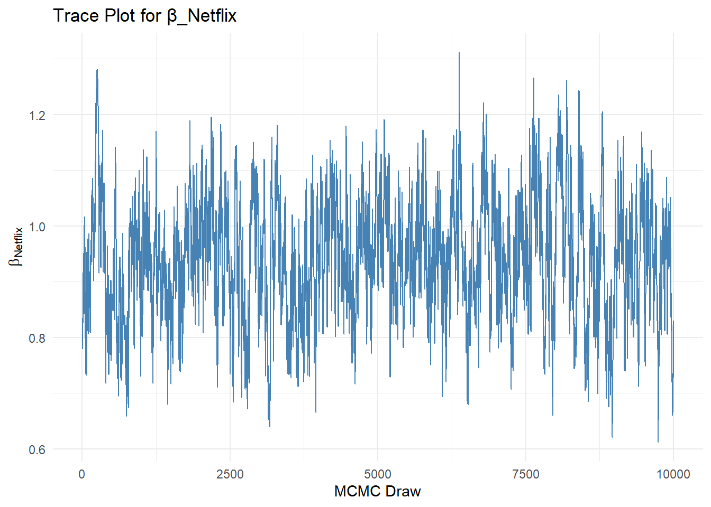
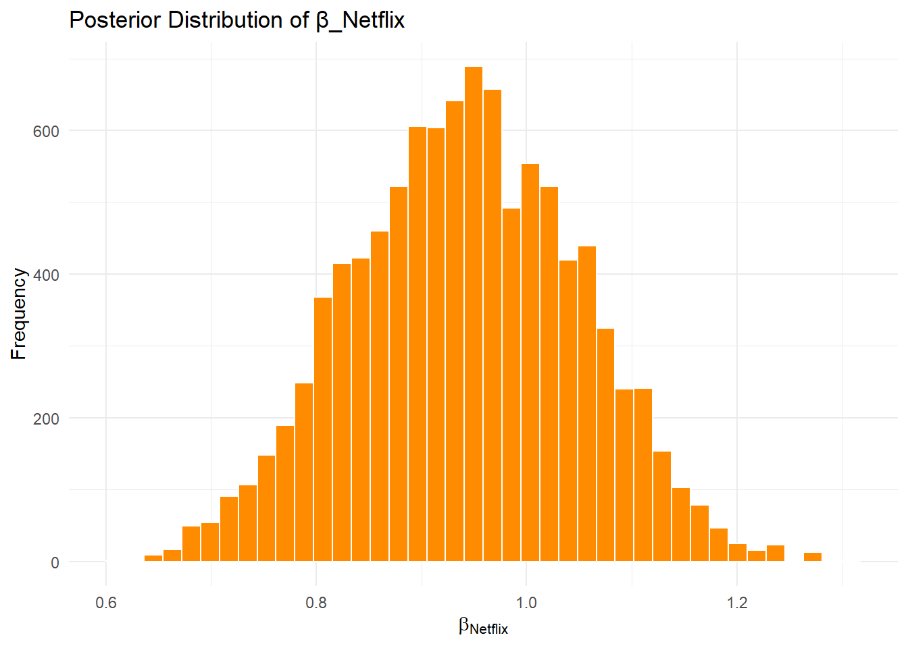

This assignment expores two methods for estimating the MNL model: (1) via Maximum Likelihood, and (2) via a Bayesian approach using a Metropolis-Hastings MCMC algorithm.
1. Likelihood for the Multi-nomial Logit (MNL) Model
Suppose we have \(i=1,\ldots,n\) consumers who each select exactly one product \(j\) from a set of \(J\) products. The outcome variable is the identity of the product chosen \(y_i \in \{1, \ldots, J\}\) or equivalently a vector of \(J-1\) zeros and \(1\) one, where the \(1\) indicates the selected product. For example, if the third product was chosen out of 3 products, then either \(y=3\) or \(y=(0,0,1)\) depending on how we want to represent it. Suppose also that we have a vector of data on each product \(x_j\) (eg, brand, price, etc.).
We model the consumer’s decision as the selection of the product that provides the most utility, and we’ll specify the utility function as a linear function of the product characteristics:
\[ U_{ij} = x_j'\beta + \epsilon_{ij} \]
where \(\epsilon_{ij}\) is an i.i.d. extreme value error term.
The choice of the i.i.d. extreme value error term leads to a closed-form expression for the probability that consumer \(i\) chooses product \(j\):
A clever way to write the individual likelihood function for consumer \(i\) is the product of the \(J\) probabilities, each raised to the power of an indicator variable (\(\delta_{ij}\)) that indicates the chosen product:
We will simulate data from a conjoint experiment about video content streaming services. We elect to simulate 100 respondents, each completing 10 choice tasks, where they choose from three alternatives per task. For simplicity, there is not a “no choice” option; each simulated respondent must select one of the 3 alternatives.
Each alternative is a hypothetical streaming offer consistent of three attributes: (1) brand is either Netflix, Amazon Prime, or Hulu; (2) ads can either be part of the experience, or it can be ad-free, and (3) price per month ranges from $4 to $32 in increments of $4.
The part-worths (ie, preference weights or beta parameters) for the attribute levels will be 1.0 for Netflix, 0.5 for Amazon Prime (with 0 for Hulu as the reference brand); -0.8 for included adverstisements (0 for ad-free); and -0.1*price so that utility to consumer \(i\) for hypothethical streaming service \(j\) is
where the variables are binary indicators and \(\varepsilon\) is Type 1 Extreme Value (ie, Gumble) distributed.
The following code provides the simulation of the conjoint data.
# set seed for reproducibilityset.seed(123)# define attributesbrand <-c("N", "P", "H") # Netflix, Prime, Huluad <-c("Yes", "No")price <-seq(8, 32, by=4)# generate all possible profilesprofiles <-expand.grid(brand = brand,ad = ad,price = price)m <-nrow(profiles)# assign part-worth utilities (true parameters)b_util <-c(N =1.0, P =0.5, H =0)a_util <-c(Yes =-0.8, No =0.0)p_util <-function(p) -0.1* p# number of respondents, choice tasks, and alternatives per taskn_peeps <-100n_tasks <-10n_alts <-3# function to simulate one respondent’s datasim_one <-function(id) { datlist <-list()# loop over choice tasksfor (t in1:n_tasks) {# randomly sample 3 alts (better practice would be to use a design) dat <-cbind(resp=id, task=t, profiles[sample(m, size=n_alts), ])# compute deterministic portion of utility dat$v <- b_util[dat$brand] + a_util[dat$ad] +p_util(dat$price) |>round(10)# add Gumbel noise (Type I extreme value) dat$e <--log(-log(runif(n_alts))) dat$u <- dat$v + dat$e# identify chosen alternative dat$choice <-as.integer(dat$u ==max(dat$u))# store task datlist[[t]] <- dat }# combine all tasks for one respondentdo.call(rbind, datlist)}# simulate data for all respondentsconjoint_data <-do.call(rbind, lapply(1:n_peeps, sim_one))# remove values unobservable to the researcherconjoint_data <- conjoint_data[ , c("resp", "task", "brand", "ad", "price", "choice")]# clean uprm(list=setdiff(ls(), "conjoint_data"))
3. Preparing the Data for Estimation
The “hard part” of the MNL likelihood function is organizing the data, as we need to keep track of 3 dimensions (consumer \(i\), covariate \(k\), and product \(j\)) instead of the typical 2 dimensions for cross-sectional regression models (consumer \(i\) and covariate \(k\)). The fact that each task for each respondent has the same number of alternatives (3) helps. In addition, we need to convert the categorical variables for brand and ads into binary variables.
# Convert brand and ad to dummy variableslibrary(dplyr)
Attaching package: 'dplyr'
The following objects are masked from 'package:stats':
filter, lag
The following objects are masked from 'package:base':
intersect, setdiff, setequal, union
library(tidyr)# Create dummy variables: reference categories are Hulu for brand, and Ad-Free for adsmnl_data <- conjoint_data %>%mutate(brand_N =ifelse(brand =="N", 1, 0),brand_P =ifelse(brand =="P", 1, 0),ad_yes =ifelse(ad =="Yes", 1, 0) ) %>%select(resp, task, brand_N, brand_P, ad_yes, price, choice)# Convert to grouped format for each choice task (each respondent x task x alternative)head(mnl_data)
To prepare the data for estimation, we create dummy variables for categorical attributes. Netflix and Amazon Prime are coded as binary indicators, with Hulu as the base. Similarly, the presence of ads is coded as a binary variable, with ad-free as the baseline. This reshaped data structure allows us to easily evaluate the utility of each alternative per choice task.
4. Estimation via Maximum Likelihood
We define the log-likelihood function for the multinomial logit model. This function takes a vector of coefficients (beta) and computes the utility of each alternative in each choice task. Using the exponentiated utilities, we calculate the choice probabilities and compute the log-likelihood as the sum of log-probabilities for the chosen alternatives.
To facilitate numerical stability and easy optimization, we return the negative log-likelihood, which can be minimized using numerical solvers.
# Load necessary packageslibrary(dplyr)# Define log-likelihood functionlog_likelihood <-function(beta, data) {# Unpack beta vector b_brand_N <- beta[1] b_brand_P <- beta[2] b_ad_yes <- beta[3] b_price <- beta[4]# Compute utility data <- data %>%mutate(v = b_brand_N * brand_N + b_brand_P * brand_P + b_ad_yes * ad_yes + b_price * price )# Normalize within each choice task using log-sum-exp trick data <- data %>%group_by(resp, task) %>%mutate(exp_v =exp(v),sum_exp_v =sum(exp_v),prob = exp_v / sum_exp_v ) %>%ungroup()# Log-likelihood: sum of log probs for chosen alternatives ll <-sum(log(data$prob[data$choice ==1]))return(-ll) # negative for minimization}# Test the function with initial guessesinit_beta <-c(0, 0, 0, 0) # starting valueslog_likelihood(init_beta, mnl_data)
[1] 1098.612
We estimate the parameters of the multinomial logit model using the BFGS optimization method via optim(). The algorithm returns the MLEs of the four utility parameters and the Hessian matrix, which we invert to obtain the variance-covariance matrix.
From the diagonal of the variance-covariance matrix, we compute standard errors, and then construct 95% confidence intervals using the normal approximation.
We implement a Metropolis-Hastings MCMC sampler to estimate the posterior distribution of the MNL model parameters. We use weakly informative normal priors: N(0,5) for the binary variables and N(0,1) for the price coefficient. The proposal distribution adds small random noise independently to each parameter.
The sampler runs for 11,000 steps, discards the first 1,000 as burn-in, and retains 10,000 posterior draws. The resulting samples approximate the joint posterior distribution over the four coefficients.
# Log-prior function (sum of log-Normal densities)log_prior <-function(beta) {sum(dnorm(beta[1:3], mean =0, sd =sqrt(5), log =TRUE)) +# binary variablesdnorm(beta[4], mean =0, sd =1, log =TRUE) # price}# Log-posterior: sum of log-likelihood and log-priorlog_posterior <-function(beta, data) {-log_likelihood(beta, data) +log_prior(beta)}# Metropolis-Hastings MCMC functionmh_sampler <-function(start, n_iter, proposal_sd, data) { beta_curr <- start post_curr <-log_posterior(beta_curr, data) chain <-matrix(NA, nrow = n_iter, ncol =4)for (i in1:n_iter) {# Propose new beta values beta_prop <- beta_curr +rnorm(4, mean =0, sd = proposal_sd) post_prop <-log_posterior(beta_prop, data)# Acceptance probability alpha <-exp(post_prop - post_curr)if (runif(1) < alpha) { beta_curr <- beta_prop post_curr <- post_prop }# Save draw chain[i, ] <- beta_curr }colnames(chain) <-c("β_Netflix", "β_Prime", "β_Ads", "β_Price")return(chain)}# Run the samplerset.seed(42)proposal_sd <-c(0.05, 0.05, 0.05, 0.005)mh_chain <-mh_sampler(start =c(0, 0, 0, 0), n_iter =11000, proposal_sd = proposal_sd, data = mnl_data)# Discard burn-inmh_chain_post <- mh_chain[1001:11000, ]
Below are the trace plot and posterior histogram for the β_Netflix parameter.
The trace plot helps assess convergence and mixing of the chain. It should look like a “fat fuzzy caterpillar” without major drifts or stickiness.
The histogram represents the marginal posterior distribution, providing an estimate of the parameter and its uncertainty.
library(ggplot2)# Extract draws for β_Netflixbeta_netflix <- mh_chain_post[, "β_Netflix"]draws <-1:length(beta_netflix)# Trace plottrace_df <-data.frame(Draw = draws, Beta = beta_netflix)ggplot(trace_df, aes(x = Draw, y = Beta)) +geom_line(color ="steelblue") +labs(title ="Trace Plot for β_Netflix",x ="MCMC Draw",y =expression(beta[Netflix])) +theme_minimal()

# Histogram of posteriorhist_df <-data.frame(Beta = beta_netflix)ggplot(hist_df, aes(x = Beta)) +geom_histogram(bins =40, fill ="darkorange", color ="white") +labs(title ="Posterior Distribution of β_Netflix",x =expression(beta[Netflix]),y ="Frequency") +theme_minimal()

The table below compares the parameter estimates from the Maximum Likelihood Estimation (MLE) and the Bayesian posterior summaries obtained via Metropolis-Hastings MCMC.
The Bayesian estimates are similar to the MLEs in point estimates, indicating consistency.
The standard deviations of the posterior distributions play a similar role to standard errors in MLE, and the 95% credible intervals are often slightly wider, reflecting additional uncertainty from the prior.
This comparison highlights the value of Bayesian methods in not only estimating the parameters but also fully characterizing their uncertainty.
# Compute posterior summariesposterior_summary <-apply(mh_chain_post, 2, function(param) { mean_val <-mean(param) sd_val <-sd(param) ci <-quantile(param, probs =c(0.025, 0.975))c(Mean = mean_val, SD = sd_val, CI_Lower = ci[1], CI_Upper = ci[2])})# Convert to data frame for displayposterior_summary_df <-as.data.frame(t(posterior_summary))posterior_summary_df$Parameter <-rownames(posterior_summary_df)rownames(posterior_summary_df) <-NULL# Add MLE estimates and SEs for comparisonmle_summary$Method <-"MLE"posterior_summary_df$Method <-"Bayesian"# Standardize column names for mergingcolnames(posterior_summary_df)[1:4] <-c("Estimate", "Std_Error", "CI_Lower", "CI_Upper")# Combine both summaries into one tablecombined_results <-rbind(mle_summary, posterior_summary_df)# Display side-by-sidelibrary(knitr)kable(combined_results[, c("Parameter", "Method", "Estimate", "Std_Error", "CI_Lower", "CI_Upper")],digits =3,caption ="Comparison of MLE and Bayesian Posterior Summaries")
Comparison of MLE and Bayesian Posterior Summaries
Parameter
Method
Estimate
Std_Error
CI_Lower
CI_Upper
β_Netflix
MLE
0.941
0.111
0.724
1.159
β_Prime
MLE
0.502
0.111
0.284
0.719
β_Ads
MLE
-0.732
0.088
-0.904
-0.560
β_Price
MLE
-0.099
0.006
-0.112
-0.087
β_Netflix
Bayesian
0.942
0.108
0.731
1.146
β_Prime
Bayesian
0.495
0.111
0.282
0.709
β_Ads
Bayesian
-0.736
0.090
-0.915
-0.557
β_Price
Bayesian
-0.100
0.006
-0.113
-0.088
6. Discussion
6.1 Interpreting Parameter Estimates Without Simulation
If we hadn’t simulated the data ourselves, we would still observe that the parameter estimates yield intuitive results:
The estimate for \(\beta_\text{Netflix}\) is consistently larger than \(\beta_\text{Prime}\) under both MLE and Bayesian methods. This indicates that, on average, respondents derive more utility from Netflix than from Amazon Prime, all else being equal.
The estimate for \(\beta_\text{price}\) is negative, which is exactly what we would expect. It implies that higher prices reduce utility, and consumers prefer lower-cost options.
These findings align well with economic theory and expected consumer behavior, suggesting that the model is functioning properly and capturing realistic preferences.
6.2 Extending to Hierarchical (Multi-Level) Models
In this assignment, we used a pooled (fixed-effect) model, assuming a single set of coefficients applies to all individuals. This is a useful starting point but oversimplifies real-world behavior.
In practice, people differ in their preferences. A multi-level (hierarchical or random-effects) model addresses this by allowing each respondent to have their own set of coefficients:
We would simulate individual-level parameters by drawing each respondent’s \(\beta_i\) from a population distribution (e.g., \(\beta_i \sim \mathcal{N}(\mu, \Sigma)\)).
To estimate such a model, we would need to infer both the population-level parameters (mean and covariance) and the individual-level betas.
Estimation typically requires fully Bayesian approaches, such as Gibbs sampling or Hamiltonian Monte Carlo (HMC) via Stan, since the posterior involves many latent variables (one set of betas per individual).
This hierarchical approach better captures preference heterogeneity and is commonly used for analyzing real-world conjoint data.